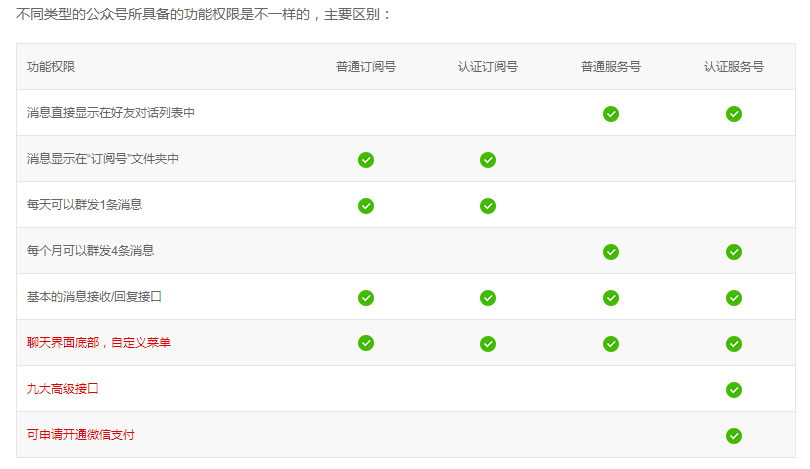
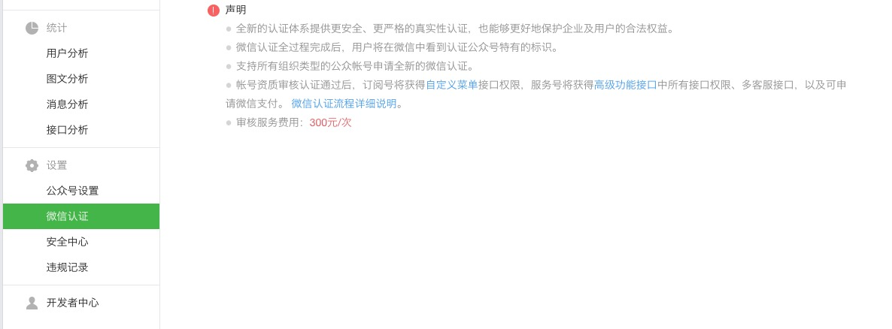

微信公众号分为订阅号、服务号和企业号，他们的区别就跟他们的名字一样：一个是倾向于订阅类，一个是倾向于服务类，一个用于企业内部通讯。
服务号、订阅号、企业号的介绍（区别）
温馨提示：

微信认证指的是该微信公众号的资质通过了微信官方的认证。现在只有服务号才能申请微信认证。服务号申请微信认证只需要按照认证流程提交相关的公司资质文件并交纳每年300元的认证费用即可。认证时间很快，虽然官方声称15个工作日之内，但是我申请的时候只用了12个小时就成功地通过了微信认证。而通过微信认证的好处就是可以使用更多的高级接口，比如微信支付等。

进行为你公众号开发最好就是申请一个服务号，并且进行认证，这样可以使用到所有接口，可以最大限度地掌握微信开发的所有接口。
其次你还需要有一台具有公网IP的服务器，最简单的方法就是去国内的阿里云申请一个服务器。如果你是学生，那你可以考虑申请一下GitHub大礼包。这里面有DigitalOcean得代金券，足够你使用2年之久。
之所以需要一台公网服务器的原因是微信服务器会将其收到的用户信息转发给我们，所以我们需要一台服务器来部署我们自己的应用，从而对用户的消息做针对性地处理。
微信公众号可以直接到微信公众号官网进行申请。订阅号企业和个人都可申请，而服务号和企业号只有企业才能申请。
下一章将说一说配置我们自己的服务器，以接收微信服务器的请求。